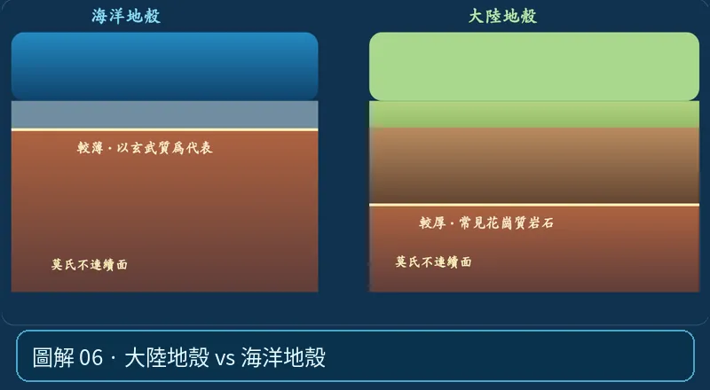

第 02 單元｜圖解 6/6｜課本 p.68–71
大陸地殼 vs 海洋地殼
大陸地殼通常較厚（約 30–70 km）、平均密度較低、花崗質岩石較常見；海洋地殼較薄（約 5–10 km）、平均密度較高、以玄武岩與輝長岩為代表。
① 看一眼② 操作圖③ 自己推理④ 揭開解答
🔬 這張圖，請自己動手試
操作圖上方的頁籤、滑桿或按鈕；圖片也能左右滑動放大觀看。
互動圖解 · 大陸地殼 vs 海洋地殼

原創 SVG 地科教學模型，方便理解，非真實比例、非即時地震資料；互動無法載入時仍有靜態圖。
STEP 01 · 先觀察
👀 眼睛先找線索
切換「海洋／大陸地殼」，比較厚度與材料；刻意把「地殼厚度」和「岩石密度」分開看。
💡 為什麼是這樣？
海洋地殼較薄、平均密度較大，以玄武質材料為主；大陸地殼一般較厚、平均密度較小。隱沒還要考慮整塊岩石圈的冷卻與浮力。
🎯 換個問法想一題
海洋地殼厚度較小，就能推論它密度一定較小嗎？
我想好了，點開看答案 ↓
不能。厚度與密度是不同物理量；海洋地殼通常較薄但密度較大。
⚡ 一句記住：地殼有海陸差異